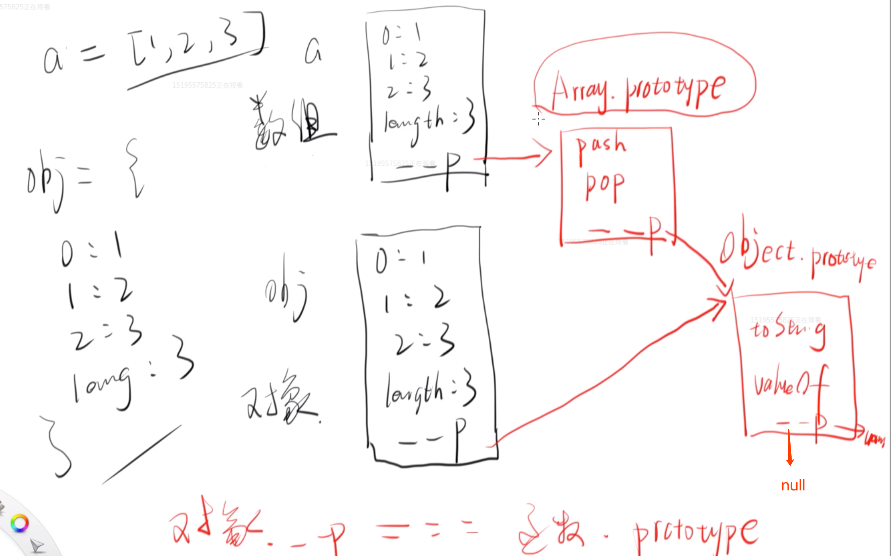
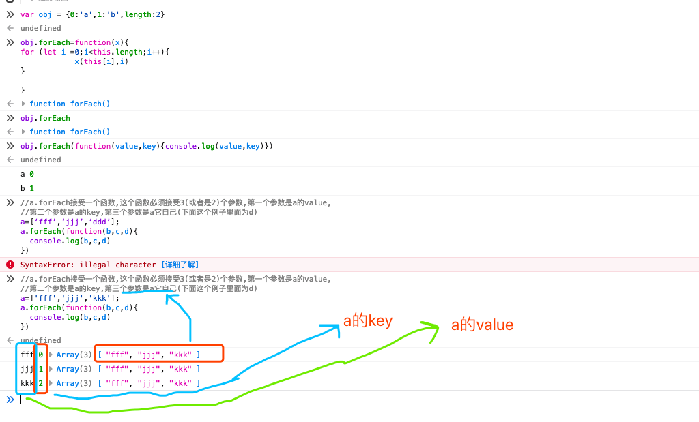

_files/61059562.png)
Object是由object构造出来的对象,Ararry是由Array构造出来的一种特殊对象!
toString,valueof是所有Object的公用属性;
所有String的公用对象里面有.trim(), .split()(在String.prototype下面)等方法;
所有数组都有共有属性Array.prototype:里面有.push(),.pop()等；
所有的函数都有共有属性Function.prototype:里面有.call(),.bind(),.apply()等；
数组和对象的区别是对象没有数组的共有属性,而数组有！！

伪数组:没有Array.prototype这个属性
只有Arguments是,在js里面;
forEach
每个函数都会默认返回return undefined(哪怕你不写return!)
例子:
function x(y){ if (typeof y !=='function'){ console.log('get out!!') return false } else{ console.log('我接受到了一个函数') return true } } undefined x(1) false get out!! debugger eval code:4:9x( function(){} ) true 我接受到了一个函数function y_我的名字叫接受并执行同时传参给另外一个函数(y){ y(666) } undefined y_我的名字叫接受并执行同时传参给另外一个函数(function(){ console.log(arguments)//arguments就是这个函数在执行的时候接受到的参数! }) undefined Arguments { 0: 666, … }debugger eval code:2:9y_我的名字叫接受并执行同时传参给另外一个函数(function(参数1){ console.log(参数1)//! }) undefined 666 debugger eval code:2:9//y_我的名字叫接受并执行同时传参给另外一个函数:这个函数作用就是把接受的这个函数执行一下,然后传个666//y_我的名字叫接受并执行同时传参给另外一个函数:这个函数接受了一个函数(这里为匿名函数:function(sdf){console.log(sdf)} )//这个匿名函数必须接受一个参数;这个参数(这里指的是sdf这个参数!)的值这里还不知道!必须要看另外一个函数的源代码(上面声明了！)才知道//y_我的名字叫接受并执行同时传参给另外一个函数(function(sdf){ console.log(sdf)// }) undefined 666a.forEach是个函数,结了两个参数,一个是数组,一个是对它的操作
function forEach(array,x){ for (let i =0;i<array.length;i++){ x(array[i],i) } } undefined forEach(['a','b','c'],function(value,key){ console.log(value,key) }) undefined a 0 debugger eval code:2:9b 1 debugger eval code:2:9c 2 debugger eval code:2:9//forEach所做的事:遍历['a','b','c']这个数组,对于数组中的每一项,//都调用function(value,key){console.log(value,key)}这个匿名函数;//调用上面这个匿名函数的时候会传2个参数;第一个参数是函数的值(value):array[i];//第二个参数是函数的key:i,这里有三项,就传三次,每次都是不一样的值和keyforEach(['a','b','c'],function(value,key){ console.log(value,key) }) undefined a 0 debugger eval code:6:9b 1 debugger eval code:6:9c 2 debugger eval code:6:9var a =['a','b','c']; a.forEach(function(p,q){ console.log(p,q) }) ////这里的意思是在a上面遍历每一项,在每一项上面调用//函数x,在调用函数x的时候传一个value(这里为参数p)和key(这里为参数q) undefined a 0 debugger eval code:3:9b 1 debugger eval code:3:9c 2
//a.forEach接受一个函数,这个函数必须接受3(或者是2)个参数,第一个参数是a的value,//第二个参数是a的key,第三个参数是a它自己(下面这个例子里面为d)a=['fff','jjj','kkk']; a.forEach(function(b,c,d){ console.log(b,c,d) }) undefined fff 0Array(3) [ "fff", "jjj", "kkk" ]debugger eval code:5:11jjj 1Array(3) [ "fff", "jjj", "kkk" ]debugger eval code:5:11kkk 2Array(3) [ "fff", "jjj", "kkk" ]数组的本质:下划线__protype指向Array.prototype!
forEach的理解!